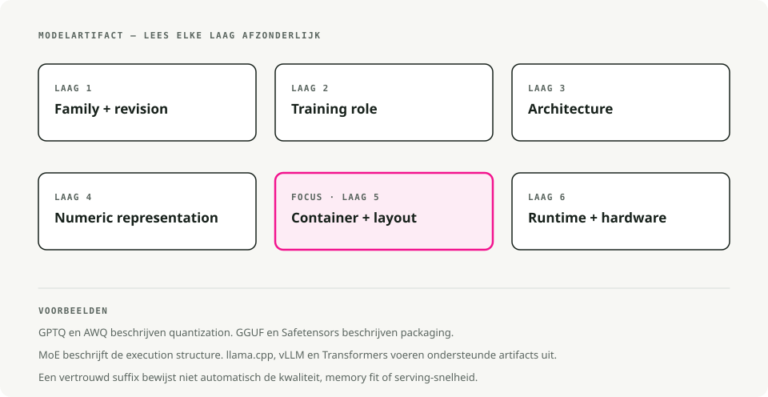
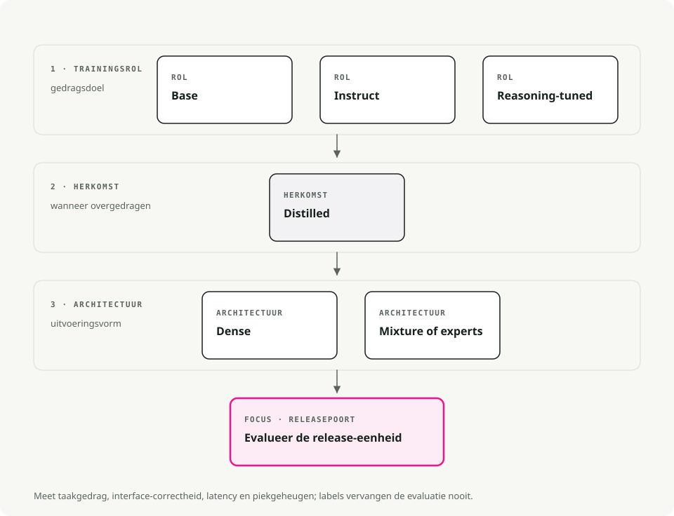
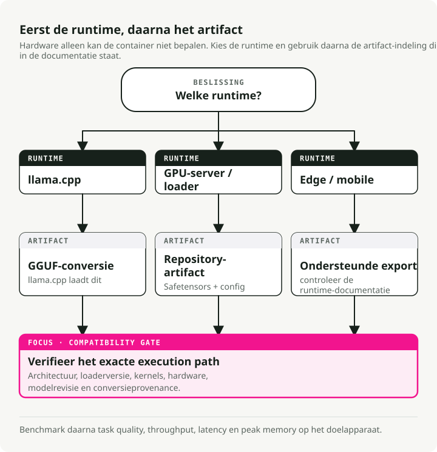
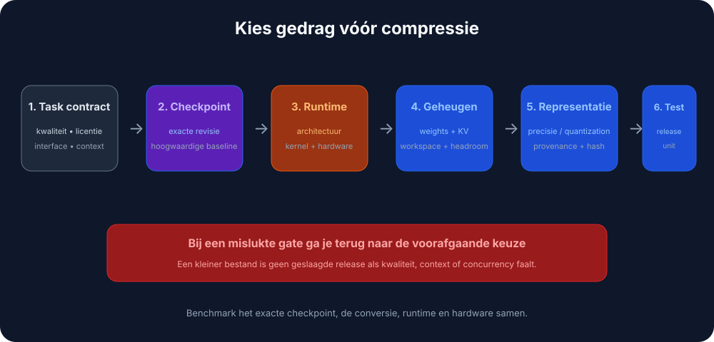

Automatische vertaling
Dit artikel is automatisch vertaald vanuit de oorspronkelijke Engelse versie.
Open-source LLM-varianten en bestandsformaten: Instruct, GGUF, GPTQ, AWQ en MoE
Waarom hebben open-source LLM's zoveel verwarrende namen?
Je hebt waarschijnlijk namen gezien zoals Llama-3.1-8B-Instruct.Q4_K_M.gguf of Mistral-7B-v0.3-A3B.awq en je afgevraagd waar die suffixen voor dienen. Ze ogen rommelig, maar vertellen je eigenlijk twee verschillende dingen tegelijk.
Open-source LLM's verschillen langs twee onafhankelijke dimensies:
- Modelvariant: de suffix in de naam (
-Instruct,-Distill,-A3B) beschrijft hoe het model is getraind en waarvoor het is geoptimaliseerd. - Bestandsformaat: de extensie (
.gguf,.gptq,.awq) beschrijft hoe de gewichten zijn opgeslagen en waar ze het best draaien (CPU, GPU, mobiel).
De variant bepaalt wat het model kan doen. Het formaat bepaalt waar het efficiënt kan draaien.

Haal je die twee door elkaar, dan ben je zo een avond kwijt aan CUDA-fouten op een model dat sowieso nooit op je kaart zou passen.
Modelvarianten uitgelegd (het recept)
De variant vertelt je welk type training de gewichten hebben doorlopen.
Basismodellen
Het ruwe voorgetrainde model. Het heeft taalpatronen geleerd uit enorme tekstcorpora, maar nooit geleerd om instructies te volgen; het doet alleen next-token-predictie.
Je gebruikt dit als je van plan bent het model zelf te fine-tunen op je eigen data, als je onderzoek doet en de "pure" basis wilt, of als je specifiek een model wilt zonder alignment-training ertussen.
De trade-off is dat het niet betrouwbaar instructies volgt. Vraag je "Wat is de hoofdstad van Frankrijk?", dan kan het antwoorden met "en wat is de hoofdstad van Duitsland?" omdat je vanuit zijn perspectief een lijst met vragen bent begonnen.
Instruct- / chatmodellen
Een basismodel dat extra training heeft gehad (Supervised Fine-Tuning plus RLHF), zodat het menselijke instructies kan volgen. Dit is wat de meeste mensen eigenlijk willen als ze zeggen dat ze "een LLM willen."
Dit is de juiste keuze voor chatbots, agents en RAG. Hetzelfde geldt voor function calling, tool use en dagelijkse hulp bij coderen. Grofweg 95% van de productie-use-cases valt in deze categorie.
De prijs is dat het iets groter en langzamer is dan het basismodel door de extra training, en de alignment kan het minder "creatief" maken omdat het richting voorspelbaar en behulpzaam gedrag is gestuurd.
Reasoning- / CoT-modellen
Een nieuwer type zoals DeepSeek-R1 of de o1-derivaten, getraind met Chain-of-Thought reinforcement learning. Ze "denken" na voordat ze antwoorden: ze genereren interne reasoning-tokens om complexe logica-, wiskunde- of programmeerproblemen uit te werken voordat ze het definitieve antwoord geven.
Deze modellen blinken uit in lastige coding-taken, debugging, wiskundeproblemen en logische puzzels. Ze hallucineren ook vaak minder omdat ze hun eigen werk dubbelchecken.
De keerzijde is latency. Ze produceren een lange stroom "thought"-tokens die je misschien niet eens ziet, maar waar je wel op wacht. Voor triviale prompts kunnen ze ook onnodig breedsprakig zijn.
Gedistilleerde modellen
Een kleiner "student"-model dat is getraind om een groter "teacher"-model na te bootsen. Het resultaat is gecomprimeerde kennis: meestal 70-80% van de oorspronkelijke kwaliteit bij 30-50% van de grootte.
Ze passen goed bij mobiele of edge-apparaten, kostengevoelige SaaS waar elke milliseconde telt, en diensten die veel requests moeten afhandelen.
Je levert wat vermogen voor complexe redenering in, maar de efficiëntiewinst is moeilijk te negeren.
MoE (Mixture-of-Experts): A3B, A22B, enz.
Een architectuur waarbij het model veel "expert"-subnetwerken heeft, maar er per token slechts een subset activeert. "A3B" betekent dat per token 3B parameters actief zijn, ook al kan het totale model 30B+ zijn.
Dat is nuttig als je de slimheid van een groot model wilt op een kaart met 12-24 GB VRAM zonder de volledige inferentiekosten te betalen, of als je lokaal draait en de beste kwaliteit-per-geheugenverhouding wilt.
De nadelen: groter op schijf (je moet nog steeds alle experts opslaan), en niet elk inference-framework ondersteunt MoE-routing al. Controleer compatibiliteit voordat je je vastlegt op een download van 50 GB.

Vuistregel:
- Kies standaard een Instruct-model. Dat is wat de meeste mensen nodig hebben.
- Loop je tegen geheugen- of latency-limieten aan? Probeer een gedistilleerde of MoE-variant.
- Los je echt lastige logica op? Probeer een Reasoning-model.
Bestandsformaten uitgelegd (de container)
Zodra je weet welk model je wilt, moet je kiezen hoe het is verpakt. Het formaat bepaalt vooral waar het kan draaien en hoeveel geheugen het nodig heeft.
Quantization 101: waarom we modellen verkleinen
Standaardmodellen gebruiken 16-bit getallen (FP16) voor elk gewicht. Precies, maar zwaar. Quantisatie verlaagt de gewichten naar 8-bit, 4-bit of zelfs 2-bit getallen.
- FP16: 2 bytes per parameter. Een 13B-model is ~26 GB.
- 4-bit: 0,5 bytes per parameter. Een 13B-model is ~6,5 GB.
Je levert een klein beetje "intelligentie" in en krijgt veel snelheid en geheugen terug.
GGUF (.gguf)
De opvolger van GGML, en vandaag de de-facto-standaard voor lokale inferentie. Eén enkel bestand bevat de gewichten, de metadata en zelfs de prompttemplate.
Dit is de juiste keuze op Apple Silicon (M1-M4), waar het native draait met Metal-acceleratie, en op machines zonder dedicated GPU. Ook qua tooling is dit het beste formaat: llama.cpp, Ollama en LM Studio gebruiken GGUF direct.
Één bestand, draait bijna overal, en er is een quantisatieniveau voor elk geheugenbudget.
GGUF-namen ontcijferen (Q3_K_M, Q5_K_M, enz.)
Je ziet vaak een lange lijst met bestanden zoals Q3_K_M, Q4_K_S, Q5_K_M. Die zijn niet willekeurig; dit is de K-quant-familie.
Lees Q3_K_M als volgt:
Q3: gemiddelde 3-bit-quantisatie voor de gewichten.K: gebruikt het K-quant-schema (een nieuwere methode die niet-uniforme precisie gebruikt).M: middelgrote blokgrootte, waarbijSklein is enLgroot.
Welke moet je kiezen:
Q3_K_M: de budgetoptie. De kwaliteit daalt merkbaar, maar je kunt er grotere modellen mee draaien op zwakkere hardware.Q4_K_M: de standaard. Beste balans tussen snelheid, grootte en perplexity. Voor de meeste taken merk je het verschil met de ongecomprimeerde gewichten niet.Q5_K_M: de premiumkeuze. Gebruik dit als je VRAM over hebt; de kwaliteit zit dicht bij FP16 / Q8 en het blijft relatief compact.
Pro tip: Het is vaak beter om een groter model met lagere quantisatie te draaien (Llama-70B op Q3) dan een kleiner model met hoge quantisatie (Llama-8B op Q8). Parameteraantal levert je meestal meer intelligentie op dan precisie.
GPTQ (.safetensors + config.json)
Post-training-quantisatie gericht op Nvidia-GPU's. Het gebruikt second-order-informatie om het verlies aan nauwkeurigheid klein te houden bij het comprimeren van de gewichten.
Dit is het juiste formaat voor productieservers met CUDA op Linux, en voor high-throughput-opstellingen op 4-bit. Met de ExLlamaV2-loader is het erg snel.
De beperking is de hardware-eis: het heeft een GPU nodig en draait niet efficiënt op CPU's of Macs.
AWQ (.safetensors)
Activation-Aware Weight Quantization. Het kijkt welke gewichten tijdens inferentie het belangrijkst zijn en behoudt daar de precisie van, in plaats van elk gewicht uniform te comprimeren.
Bij hetzelfde 4-bit-budget benadert het FP16-nauwkeurigheid meestal beter dan GPTQ, en het wordt native ondersteund door vLLM. Als je uit een 4-bit-model de meeste kwaliteit wilt halen, is AWQ meestal de winnaar.
PyTorch / Safetensors (FP16/BF16)
Volledig nauwkeurige gewichten, zonder quantisatie. Dit is het oorspronkelijke formaat waarin modellen worden uitgebracht.
Dit is wat je wilt voor cloud-inferentie op serieuze GPU's (A100, H100), voor fine-tuning en verdere training, en voor situaties waarin nauwkeurigheid belangrijker is dan geheugen.
De kost is duidelijk: een 70B-model in FP16 heeft ongeveer 140 GB VRAM nodig.

Tip: Begin bij twijfel met GGUF Q4_K_M. Dat draait op GPU's met 8 GB, moderne CPU's en bijna alles daartussenin. Je kunt altijd optimaliseren zodra je de bottleneck kent.
Hoe je deze daadwerkelijk draait (serving-engines)
Je hebt een serving-engine nodig om het model te laden en requests te beantwoorden.
- Ollama gebruikt GGUF en draait op Mac, Linux en Windows. De eenvoudigste CLI-tool voor lokale ontwikkeling;
ollama run llama3en je bent klaar. - LM Studio gebruikt ook GGUF en geeft je een nette GUI op Mac en Windows. Goed om modellen visueel te verkennen voordat je je eraan committeert.
- vLLM is de productiestandaard. Het laadt AWQ, GPTQ en FP16-safetensors, en is gebouwd voor high-performance-servers en Docker-deployments. GGUF-ondersteuning is nog wisselvallig.
- llama.cpp is de engine onder Ollama. Gebruik die direct als je low-level-integratie nodig hebt, of als het doelplatform klein is (Raspberry Pi, Android, embedded).
Alles samenbrengen: een besliskader
Een praktische flowchart om door te lopen. Begin met je constraints (hardware en use-case) en kies daarna de variant en het formaat die passen.

Snelle aanbevelingen per scenario
Een chatbot bouwen op een MacBook Pro (16 GB RAM). Gebruik een Instruct-model zoals Llama-3-8B of Mistral-7B in GGUF Q4_K_M. Dat draait soepel op CPU en Metal, past in het geheugen en je hebt maar met één bestand te maken.
RAG-systeem op een server met een RTX 4090 (24 GB VRAM). Gebruik Instruct of MoE (Mixtral 8x7B, Qwen-14B) in EXL2 (via ExLlamaV2) of AWQ 4-bit. Zo haal je echt waarde uit 24 GB; EXL2 is erg snel op Nvidia-kaarten.
Fine-tuning voor domeinspecifiek gebruik op een cloud-GPU. Gebruik een basismodel in FP16-safetensors. Voor training wil je volledige precisie, en starten vanuit de niet-gealigneerde basis voorkomt dat je tijdens fine-tuning tegen de alignment inwerkt.
High-throughput-API met kostenrestricties. Gebruik een gedistilleerd model (DeepSeek-Distill of vergelijkbaar) in AWQ 4-bit op vLLM. De throughput-per-dollar is moeilijk te verslaan.
Veelvoorkomende valkuilen en misverstanden
"Alle 4-bit-modellen hebben dezelfde kwaliteit"
Nee. Een QAT 4-bit-model (getraind in 4-bit) verslaat vaak een 8-bit post-training-gequantiseerd model. De methode is net zo belangrijk als het aantal bits, en AWQ behoudt meestal meer nauwkeurigheid dan naïeve GPTQ.
"MoE-modellen werken met elke inference-engine"
Nog niet. llama.cpp verwerkt MoE-routing goed, maar ondersteuning in andere engines verschilt. Verifieer dit altijd voordat je een MoE-model van 50 GB downloadt.
"Gedistilleerde modellen zijn gewoon kleinere versies van hetzelfde"
Dat is precies wat de meeste mensen missen. Een gedistilleerde 7B kan een vanilla 13B verslaan omdat die heeft geleerd van een veel grotere teacher (vaak 70B+). Het is gecomprimeerde kennis, niet alleen gecomprimeerde parameters.
"Ik moet mijn QAT-model verder quantiseren om ruimte te besparen"
Doe geen moeite. QAT-modellen zijn al getraind in low-bit-precisie. Als je die daarna nog eens quantiseert, gaat de kwaliteit meestal flink achteruit. Gebruik ze zoals uitgebracht.
"Groter is altijd beter"
Vaak wel, maar niet altijd. Een goed afgestemd 8B Instruct-model kan beter presteren dan een slecht gealigneerde 70B-base op een specifieke taak. Match de variant met de use-case voordat je achter parameteraantallen aangaat.
TL;DR - zeg gewoon wat ik moet downloaden
Als je gewoon iets wilt dat werkt:
- Download een
<model-name>-Instruct.Q4_K_M.gguf-bestand van Hugging Face.- Draai het met Ollama of LM Studio.
- Als het te traag is, probeer dan een kleiner model of een gedistilleerde variant.
- Als je geheugen tekortkomt, ga dan omlaag naar een Q3_K_M-quantisatie.
- Als de kwaliteit niet goed genoeg is, ga dan omhoog naar Q5_K_M of kies een groter model.
Begin simpel en optimaliseer pas wanneer dat echt nodig is. De standaarden werken voor ~90% van de gevallen.